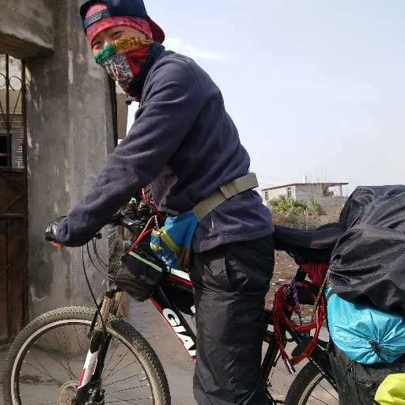

名字:
戴和霖
性别:男

介绍:旅行/家居/健身初级爱好者
问题
答案
新建于:2015-07-13 12:54:22 AM，更新于2015-07-19 12:23:23 PM
Pre上一页
Next下一页
跳页:
正文: 看了几个前面几个高票答案，大多支持旅行能改变人，我是来泼冷水的。。。。。。在旅行的很多论坛上都有大神劝告刚入门的菜鸟（不知这样说是不是不太好）：不要以为你二十多年都没想好，去一趟西藏你就能找到人生方向。。。。。。说说我自己的例子吧。我意气风发的上了大学，充满抱负的幻想自己会有一个美好的未来，想学这想学那，大学什么都沾了一点，但什么都没学会。一晃就快到大四了，对于未来还是一点方向一点目标都没。不甘心的我总要做点什么来告慰终将逝去的大学吧，当时正好看到了几个旅行的帖子，心生羡慕，仿佛鸡汤，看完后整个人打了鸡血似的。不久就在家人的反对下（农村人，家里经济不富余，家人看来旅游就是在烧钱，要我工作后去），开始了第一次旅行。可以说我这是穷游，我怀揣着九百块开始了旅程（后来用了八百），幻想着看看外面的世界（可以说是第一次出省），幻想着旅行能找到人生的方向。我去了杭州、西塘、上海、苏州、南京。在白天背着一个二十多斤的包满城的跑，小腿拉伤的条件下，晚上却在西塘的河边亭子里喂过一整夜的蚊子（没钱住宿），在上海外滩吹过一夜的凉风，被一个变态在我睡公园时迷迷糊糊的摸了下体，也在苏州一网吧熬过通宵，很多人生第一次在那次旅行中经历。我说这些不是在炫耀我多牛逼，经历了这么多难忘的事情，而是想说，然而这并没什么卵用，我还是没找到方向，我还是到了学校后每天躺在床上上网，空想，上网。。。。。也许这次旅程太短，在各种旅行论坛上泡了快两年后，我辞掉了毕业后做了快一年的工作，一个我并不喜欢的工作，只是暂且为生的工作。我告诉自己我要去西藏，我要去找我的人生方向，我要去想清楚我的人生要怎么走。从深圳一路背着一个四五十斤的包，坐火车、搭车、徒步。用了四十多天，一个城市一个乡村的到了拉萨，有过徒步一天走了五十多公里都没搭到车的，有走了一天，到了晚上九点多在西藏的大山中找不到住处的，有拼车被驴友坑的。一路下来见过各种人，见过各种风景，感受各种风土人情。。。。。。然而，这并没什么卵用，现在我还是没找到方向，我还是人生中迷途的羔羊，我还是懦弱，内向，每天过着充满对这人生、对这社会的恐惧。。。。。。回到前面说到的那句话，别以为你二十多年都没想通你的人生方向，经历一次旅行就能找到。旅行，确实能让你见识各种人，看到各种让你心胸开阔的风景，让你有各种感悟，但你，能不能改变，能不能达到你想要的效果，不一定。旅行，不是灵丹妙药，没有传说的那么神，很多人想旅行只不过是想逃避，如果你不去勇敢面对现实，没想清你究竟要什么，旅行，只不过是看风景，就像消遣看了场电影，之后会怎样，谁知道。 —————— 忽然发现这么多赞和回复，终于感到不是在玩单机版知乎—————————————————————— 对于有知友说旅行没给我带来大的改变，并不能说明别人就不会得到改变和收获。我并非说旅行是没用的，也并不是想证明我旅行没得到大的改变，就能证明旅行不能给别人带来改变。我现在依然爱旅行，想象有一天能再上路。看了前面高票答案几乎一面倒的说旅行多么神，我只是想给出另一种经历，给即将出发的朋友们以一个提醒，即使上路后也不后悔。
Pre上一页
Next下一页
跳页: